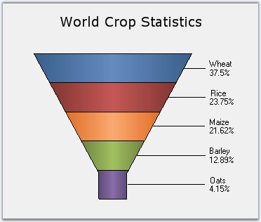
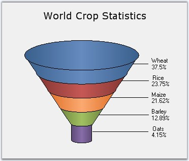
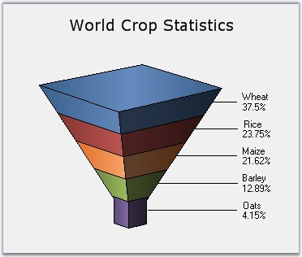
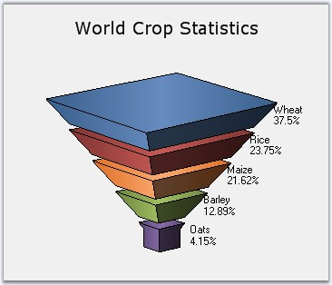

The Funnel chart is a single series chart representing the data as portions of 100%, and this chart does not use any axes. Funnel chart can be viewed in 2D or 3D mode.
Funnel charts are often used to represent stages in a sales process and show the amount of potential revenue for each stage. This type of chart can be useful also in identifying potential problem areas in an organization's sales processes. A funnel chart is similar to a stacked percent bar chart.
The following images are some sample Funnel Charts.

Figure 60: 2D Funnel Chart

Figure 61: 3D Funnel-FigureBase-Circle Chart

Figure 62: 3D Funnel-FigureBase-Square Chart

Figure 63: 3D Funnel Chart with Gap ratio 0.1
|
Details | |
|
Number of Y values per point |
1 |
|
Number of Series |
One. |
|
Cannot be Combined with |
Any other chart types. |
|
[C#]
ChartSeries series1 = this.ChartWebControl1.Model.NewSeries("Funnel chart", ChartSeriesType.Funnel); series1.Points.Add(0, 25.3); series1.Points.Add(1, 45.7); series1.Points.Add(2, 97.3); series1.Points.Add(3, 20.6); series1.Points.Add(4, 125.8); series1.Points.Add(5, 216.1); this.ChartWebControl1.Series.Add(series1); |
|
[VB.NET]
Dim series1 As ChartSeries = Me.ChartWebControl1.Model.NewSeries("Funnel chart", ChartSeriesType.Funnel) series1.Points.Add(0,25.3) series1.Points.Add(1,45.7) series1.Points.Add(2,97.3) series1.Points.Add(3,20.6) series1.Points.Add(4,125.8) series1.Points.Add(5,216.1) Me.ChartWebControl1.Series.Add(series1) |